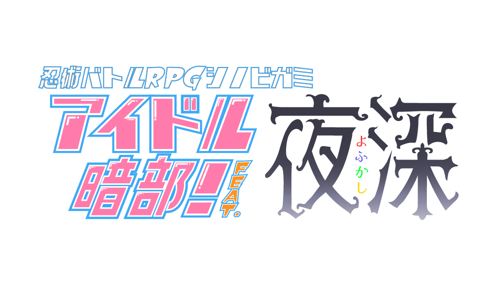

これは伝説のアイドルグループ『夜深』のメンバーに密着した、ノンフィクションドキュメンタリーである――

10周年記念ライブを3日後に控え、レッスンやリハーサルに打ち込むなか、楽屋で各々好きに過ごしている真夜と星嵐とエリス。
そこに扉が開いて、キャミィが入ってくる。何やら不穏なことを言うキャミィ。あなたたちは今回の使命を確信するだろう。
じゃあ時は遡ってリハーサル中
レヴェンダーリア！
今宵もようこそ闇の底――我が深紅の瞳が貴殿達を深き夜に誘う！
『愛 世界 全開 エモーション抜けて――』
――うん、決まってる。イイ感じ
いつもの稽古部屋。一通りレッスンを終えて落ち着く３人
イエーイ！
若干一名足りていないようだが……いつものことといえばいつものこと。何度言っても聞かぬからな、彼奴は
それは皆そうでしょう
キャミィちゃんがいないとシンメできてないデース
べつに舞台裏でまでシンメしなくていいのよ
……
それにしてもキャミィちゃんどうしたんでショーカ
なぁ、セイラ――
噂をすればなんとやら、3人が休む楽屋の外からバタバタとやかましい足音が聞こえてくる
勢いよく扉がひらかれ甲高い声が部屋内に響き渡る
大変よ！
私の占いによると！！
人類は滅亡するわ！！！！
ナ、ナンダッテー
……騒々しい奴だな、今度はいつ滅亡するんだ？
滅亡した試しがあったかしら
あによ！ちょっとは興味持ちなさいよ！
はっ。そういえば滅亡してなかったデース
けど甘いわねあんたたち！今回は物証があるの！見なさい！（スマホの画面を見せてくる）
『夜深は終わりだ。メンバーの裏切りによって終わる』
滅亡…確かに滅亡ナノデース
あぁ……？『夜深‹よふかし›は終わりだ。メンバーの裏切りによって終わる』
ふぅん。……こんなもの本気にしてるの？
……え？と、トーゼンじゃない！これはあたし様のインテリジェンスが導き出した唯一無二なる解答よ！
ほう、サンドラ……夜深‹よふかし›に背信者がいると？
笑止。”ライブ”〈ヴァルプルギスの夜〉は近いというに、戯言はよすがいい
ぬぬぬ……
私たちの中に裏切りものなんているはずナイデース。そうですよネ？
どうでしょうね？そんなことしてる暇あったら練習すれば？
みんな集まったですし、また練習デース
むむむ……まぁ、そうね。今更そんなわけわからないことする奴なんていないし……
……え？あたし様を置いてまたみんなだけで練習してたの！？
何言ってるの。勝手にいなくなったのはキャミィでしょ
（裏切……か）
だ、だって星が綺麗だったから……
本当に何言ってるの？そんなんでちゃんと踊れるのかしら
クック、まぁよいではないか。続きといこうか
イエーイ
ぐぬぅ……はーい
ではお仕事や練習で忙しいみんな、今の話を重く受け止めたのか受け流したのか、
少なからず色々と思うところのあるあなたたちは今回の使命を確信するだろう。
メインフェイズ
3サイクル。居場所は所持している。
シーン表は1d6でお願いします
あたし様の番！
1d6 シーン表 (1D6) ＞ 5
5:【放送局】
TVやラジオの収録を行う。
国民的アイドルであるあなたたちは当然顔パスだ。
気を抜くなかれ、魑魅魍魎の業界人が跋扈するここでは、光よりも速く噂話が飛び交う。
ドラマシーン：PC3 キャミィ
登場人物：PC3 キャミィ
はぁレッスンの次は……TV局ね
それにしてもやっぱり誰も信じてくれなかったわね……
けど今回のあれは……
ほわんほわんほわん（回想に入る音）
数時間前、ステージ裏にて彼女、彼方☆キャミィは青空を眺めていた
まだ太陽も登ってるのに今日は星がよく見えるわね……もしかして！次のステージの吉兆かしら！
どれどれ……さぁ！星々よ！この偉大なるあたし様に因果の流れを見せなさい！
奥義！！
■奥義
《世紀末よ、もう一度！[Encore:More!]》
指定特技 ：遊芸
エフェクト：追加忍法/巡らし/回数制限
①星見
(強)巡らし:自身が取得できない忍法でも一種類だけ選んで追加忍法で使用できる。
(弱)回数制限:追加された忍法はそれぞれ2回ずつまで使用できる。
効果・演出：
大占星術師カサンドラ様の偉大なる占い結果によると……再び恐怖の大王［アンゴルモア］が降臨し、人々は怖れ慄き逃げまどい、そして人類は滅亡する！
SG@12#2>=5 （判定：遊芸） (SG@12#2>=5) ＞ 10[4,6] ＞ 10 ＞ 成功
6d6 (6D6) ＞ 24[1,1,5,5,6,6] ＞ 24
星見の順番[1,5],[6,6],[1,5]
あれをこうしてこうやって……見える！見えるわ！星の動きが！
電子の海に滅言はまぎれる……つまりSNSね！
エゴサしよ
（エゴサ中）めるめる
『【速報】キャミィ氏人類滅亡を予言【84回ぶり52度目】』『☨真夜様☨今日も美しい』『エリス譲関西弁ペラペラ』『特売セールで星嵐様を目撃』……ごみ溜めみたいね
……ん？これは……！！大変よ！！
ほわんほわんほわん（回想が終わる音）
……占いの解釈を間違えたのかしら？まぁいいわ！
もう一度占い内容を洗ってみればいいだけのこと……せや！！
情報判定→エリス
判定：千里眼→達成値6[1,5]
うーんつまりこれはエリスの……悩み？かしら
あとで会いに行ってあげましょ！さぁ仕事仕事！
シーン終了
1d6 シーン表 (1D6) ＞ 4
4:【街中】
繁華街の雑踏。
並のアイドルであれば変装必須の人混みだが、忍であるあなたは気配を消すなどお手の物。
だがゆめ忘れるな、ファンという生き物の目ざとさを…。
ドラマシーン：PC2 星嵐
登場人物：PC2 星嵐、PC1 真夜
真夜ちゃんに買い物を手伝ってもらう
お肉が安いのよ、ひとり一つだからついてきてくれる？
よかろう……この我をセール目的で連れる人間は汝くらいなものだぞ
普通にしゃべってくれない？……そういえば、さっき何か言おうとしてなかった？
……
なんのことかな
……そう？ならいいけど
背信者、いると思うか？
メンバーの中にってこと？……どうかしら。もう10年だし、勝手なことを言うファンは少なからずいると思うけど
……真に受けているわけではない、気にしないでくれ
裏切りのユダ、磔のミサ……レヴェンダーリア
……そう。ならいいけど
真夜ちゃんから情報を瞳術で
2D6>=5 （判定：瞳術） (2D6>=5) ＞ 6[3,3] ＞ 6 ＞ 成功
……ふぅん？
どうした？
そう……だからこんなセールなんかにもついてきてくれるわけね
――？汝が言い出したことだろうよ
ふふ、そうね、私には今特売セールより大事な物なんてないもの。ありがと、ついてきてくれて
う。うん
シーン終了
私のターンでーす！
1d6 シーン表 (1D6) ＞ 1
1:【ライブステージ】
10周年ライブを控えた100万人が収容可能なハコ。未だ静寂を守るその舞台は、今か今かと新たな喧騒を待ちわびている。
ドラマシーン：PC4 エリス
登場人物：PC4 エリス
ここが今回の舞台ナノデース
それにしても、キャミィちゃん一体何をみたんでショウ
気になりますねぇ
ってことで調査術で調べましょうー
2D6>=5 （判定：調査術） (2D6>=5) ＞ 7[1,6] ＞ 7 ＞ 成功
はいはいはいはいはい
確かに大変そうナノデース
ってことで
星嵐ちゃんに社会戦をウチマース
2D6>=5 （判定：流言の術） (2D6>=5) ＞ 6[3,3] ＞ 6 ＞ 成功
WT 変調表(4) ＞ 行方不明:その戦闘終了後、メインフェイズ中に行動不可。１サイクルの終了時に、《経済力》で成功すると無効化される。
じゃ
天眼発動シマース
2D6>=5 （判定：対人術） (2D6>=5) ＞ 10[4,6] ＞ 10 ＞ 成功
もちろん秘密デース
ほんほんほん
なんか秘密が流れ込んできたデース
大変なのでーす…でーす
ターンエンドナノデース
シーン終了
シーン表(1d6) (1D6) ＞ 6
6:【音楽スタジオ】
曲の収録を行う都内某所のスタジオ。
放送局とは打って変わって無口な職人たちが多いが、多くを語らぬ慎ましさとクオリティに対する真摯な姿勢は、業界に疲れたあなたたちに一瞬の癒やしを与えている。
メインフェイズ戦闘→エリス
戦闘シーン：PC1 真夜
登場人物：PC1 真夜、PC4 エリス
レコーディング終わり、現場にエリスを呼び出す
わざわざ呼び出して済まない。”ライブ”〈ヴァルプルギスの夜〉も近いがレコーディングもはずせんでな
確かにナノデース。でもなんで私だけなのデスカ？
少し……話がしたくてな
エリス、汝はどうみる？
あーえっと。大変そうだと思うのデース
フ……、あれがただの戯言で済みそうにないとは気づいていると。そうとるが？
私もキャミィちゃんに言われたの気になったのデース
だから、ちょっとだけ調べてみたのデース
セイラ――だろう
そう――ですね
汝は何を感じた？
……何とかしたい、デスネ
それが本心であるならば――
思えば。汝とは、あまりこうした会話をした記憶がないな
そうナノデース
汝は、昔から変わらぬな……つかみどころのない女だ
いや、我が言えた義理ではないか。もっと歩み寄るすべはあるのかもしれないな？
私は至って単純な女ナノデース
クック。すこし、昔話でもしようか？
無論、我が語るは歌のしらべよ……聞くがいい
汝、天色の瞳に何を宿す。廻れ、神星のルミナス。
レヴェンダーリア！
やっぱりリーダーは自由ナノデース
――光群がる月夜の果て 絡み歪む世界さえ
[ 夜月 真夜 ] がダイスシンボルを公開。出目は 6 です。
[ 獅堂 エリス ] がダイスシンボルを公開。出目は 2 です。
その扉は、大いなる意思の導き
怯え続けた嘆きの闇、痛み消えぬ運命なら……
震え叫ぶ月夜 この胸に感じる戒めの羽ばたきは意思となって
脱落
エリスちゃんの勝ちです
真夜ちゃんの秘密をお願いします
はいはいはいはい
そっとPC2の秘密を真夜ちゃんに渡します
したいな
――これが我の秘めたる思い
わかりましたですの
とても熱い思いが伝わってきたですの
アーレア・ヤクタ・エスト、既に運命の賽は投げられた
我には我の道があるように、汝には汝の道があるはず
押し通すならば、ゆく道は一つ……レヴェンダーリア
ゆく道は一つナノデース
シーン終了
行方不明回復判定：
2D6>=7 （判定：人脈） (2D6>=7) ＞ 3[1,2] ＞ 3 ＞ 失敗